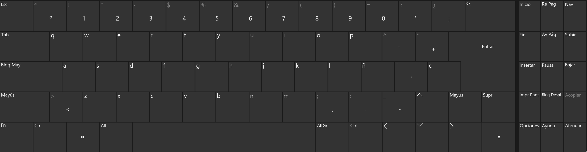

西班牙语 | 字母表
西语键盘

字母表 | El Alfabeto
| A, a | B, b | C, c | CH, ch | E, e | F, f | G, g | H, h |
|---|---|---|---|---|---|---|---|
| a | be | ce | che | de | efe | ge | hache |
| I, i | J, j | K, k | L, l | LL, ll | M, m | N, n | Ñ, ñ |
| i | jota | ka | ele | elle | eme | ene | eñe |
| O, o | P, p | Q, q | R, r | S, s | T, t | U, u | V, v |
| o | pe | cu | erre | ese | te | u | uve |
| W, w | X, x | Y, y | Z, z | ||||
| uve doble | equis | i griega | zeta |
元音
a, e, i, o, u
o: 不要撅嘴，下巴不要用力
H, h
- 任何时候h都不发音
| a | e | i | o | u |
|---|---|---|---|---|
| ha | he | hi | ho | hu |
F, f
| a | e | i | o | u |
|---|---|---|---|---|
| fa | fe | fu | fi | fu |
| afa | efe | ifi | ofo | ufu |
L, l
- 放在词尾只是带一下舌头，不用卷舌，舌尖结束在上齿
| a | e | i | o | u |
|---|---|---|---|---|
| la | le | li | lo | lu |
| ala | ele | ili | olo | ulu |
| al | el | il | ol | ul |
M, m
- m在词尾发闭口的鼻音
| a | e | i | o | u |
|---|---|---|---|---|
| ma | me | mi | mo | mu |
| ama | eme | imi | omo | umu |
| am | em | im | om | um |
N, n
- n在词尾发不闭口的鼻音
| a | e | i | o | u |
|---|---|---|---|---|
| na | ne | ni | no | nu |
| ana | ene | ini | ono | unu |
| an | en | in | on | un |
Ñ, ñ
- ñ发ni的音
| a | e | i | o | u |
|---|---|---|---|---|
| ña | ñe | ñi | ño | ñu |
| aña | eñe | iñi | oño | uñu |
CH, ch
- 发7的音
| a | e | i | o | u |
|---|---|---|---|---|
| cha | che | chi | cho | chu |
| acha | eche | ichi | ocho | uchu |
LL, ll
| a | e | i | o | u |
|---|---|---|---|---|
| lla | lle | lli | llo | llu |
| alla | elle | illi | ollo | ullu |
S, s
| a | e | i | o | u |
|---|---|---|---|---|
| sa | se | si | so | su |
| asa | ese | isi | oso | usu |
-
如果s在词尾发短且弱的 “s” 音
如： as， es， is， os， us
-
如果s在其他辅音前面，发浊化的 “z” 的音
如：asno， isla， misma
P, p
- 清辅音p，不发爆破音，发 “b” 音
- 与 b 的区别，b是浊辅音，p是清辅音，但是两者都发 “b”
| a | e | i | o | u |
|---|---|---|---|---|
| pa | pe | pi | po | pu |
| apa | epe | ipi | opo | upu |
T, t
- 清辅音t，发 “d” 的音
| a | e | i | o | u |
|---|---|---|---|---|
| ta | te | ti | to | tu |
| ata | ete | iti | oto | utu |
Z, z
-
一般来说，ze 和 zi 在西语中不存在，用 ce 和 ci 替代
-
发咬舌音，θ
| a | e | i | o | u |
|---|---|---|---|---|
| za | ce | ci | zo | zu |
| aza | ece | ici | ozo | uzu |
C, c
- 发 “g” 的音
| a | e | i | o | u |
|---|---|---|---|---|
| ca | que | qui | co | cu |
| aca | eque | iqui | oco | ucu |
Q, q
-
q 不能单独发音，和u组合才能发音。
-
只有 que 和 qui 两种形式
| e | i |
|---|---|
| que | qui |
| eque | iqui |
J, j
- 发 h 的音
| a | e | i | o | u |
|---|---|---|---|---|
| ja | je | ji | jo | ju |
| aja | eje | iji | ojo | uju |
G, g
-
发浊辅音 “g”，注意 ge 和 gi 被 gue 和 gui 替换了
-
ge 和 gi 发 je 和 ji 的音，也就是 /he/ 和 /hi/。
-ge = je ; ege = eje
gi = ji ; igi = iji
- 分音符：güi；güe，u和i都要发出来，换句话说就是一个辅音+两个元音
而 gui 和 gue 则只发 /gi/ 和 /ge/ 的音，换句话说就是一个辅音+一个元音
| a | e | i | o | u |
|---|---|---|---|---|
| ga | gue | gui | go | gu |
| aga | egue | igui | ogo | ugu |
K, k
- 发清音/g/，一般用于外来词汇，与c发的/g/一致
| a | e | i | o | u |
|---|---|---|---|---|
| ka | ke | ki | ko | ku |
| aka | eke | iki | oko | uku |
B, b
-
在词首和辅音m，n之后，发浊辅音/b/的音
-
在词中（元音和其他辅音后）发微弱的咬唇音，是介于/v/和/b/之间的音
| a | e | i | o | u |
|---|---|---|---|---|
| ba | be | bi | bo | bu |
| aba | ebe | ibi | obo | ubu |
V, v
-
和b的发音规则一致
-
在词首和辅音m，n之后，发浊辅音/b/的音
-
在词中（元音和其他辅音后）发微弱的咬唇音，是介于/v/和/b/之间的音
| a | e | i | o | u | 发音规则 |
|---|---|---|---|---|---|
| va | ve | vi | vo | vu | /b/ |
| ava | eve | ivi | ovo | uvu | 弱咬唇音 |
D, d
- 在词首，辅音n，l后，发浊辅音/d/
如 anda, saldo
-
在词中（元音和其他辅音后），发浊辅音/ð/（咬舌吹起），声带振动
-
在词尾，发弱且短的浊辅音/ð/，声带不振动
| a | e | i | o | u |
|---|---|---|---|---|
| da | de | di | do | du |
| ada | ede | idi | odo | udu |
| ad | ed | id | od | ud |
W, w
- 多用于外来词汇
| a | e | i | o | u |
|---|---|---|---|---|
| wa | we | wi | wo | wu |
| awa | ewe | iwi | owo | uwu |
X, x
-
在词首或者辅音前，发/s/的音
-
在两元音之间或词尾，发/gs/的音
-
在México, mexicano相关的单词中发/h/音，也就是j的读音
| a | e | i | o | u | 发音 |
|---|---|---|---|---|---|
| xa | xe | xi | xo | xu | /s/ |
| axa | exe | ixi | oxo | uxu | /gs/ |
Y, y
-
在元音前，发 /y/ 也就是 /咦/ 的音，但是要浊化。换句话说和 ll 的发音一致
-
在词尾，发元音/i/的音
| a | e | o | u |
|---|---|---|---|
| ya | ye | yo | yu |
| aya | eye | oyo | uyu |
| ay | ey | oy | uy |
R, r | 万恶的大舌音
-
在词首，以及辅音n，l，s以及rr同时出现的时候，发多颤音（弹好多次
-
在词尾，元音和其他辅音后，发单颤音（弹一下
| a | e | i | o | u |
|---|---|---|---|---|
| ra | re | ri | ro | ru |
| arra | erre | irri | orro | urru |
| ara | ere | iri | oro | uru |
| ar | er | ir | or | ur |
清辅音 和 浊辅音
| 发音类型 | a | e | i | o | u |
|---|---|---|---|---|---|
| 清辅音 | ca | que | qui | co | cu |
| 浊辅音 | ga | gue | gui | go | gu |
| 清辅音 | ta | te | ti | to | tu |
| 浊辅音 | da | de | di | do | du |
| 清辅音 | pa | pe | pi | po | pu |
| 浊辅音 | ba | be | bi | bo | bu |
- 注意都是发一个音，c和g都发/g/，t和d都发/d/，p和b都发/b/。